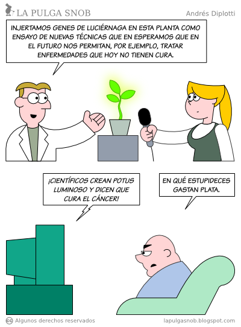
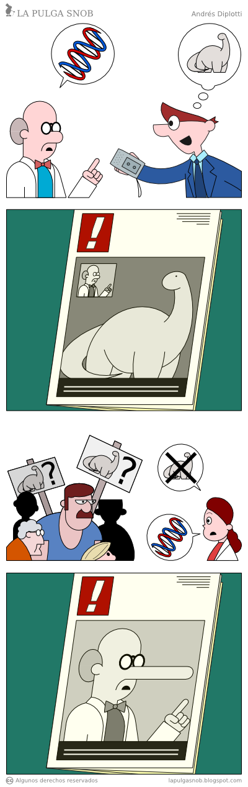

¿Son Algunos Periodistas Anti Sociales?
Ayer nuestro estimado Francotirador nos sorprendió con esta nota en el sitio de Radio Bio Bio: Estudio explica por qué ingenieros, programadores y científicos son antisociales.
Pregunté a mi TL en Twitter que opinaban de este artículo y esto generó un debate bien interesante e intenso.

Parte de la discusión en Twitter ayer
A muchos no les gustó, y es obvio, porque después de todo muchos de nosotros estamos en total desacuerdo con ese estereotipo de que los ingenieros, programadores y científicos son personas asociales, menos vamos a estar de acuerdo con que se nos trate de antisociales1.
Fíjense en la imagen anterior el primer comentario, para que vean como duele este tipo de artículo en el ámbito de los profesionales que son estereotipados de esta manera. Aunque podría hablar mucho de eso, me voy a concentrar en este “díalogo” entre Carlos Orrego y Christian, porque viene una afirmación sobre la responsabilidad periodística que es muy importante para el resto de este artículo:

Diálogo entre Carlos y Christian
Fíjense como el periodista se defiende, pero quien critica tiene razón, y mucha como vamos a ver. Porque en realidad la nota es muy mala(*), además de muy tendenciosa, partiendo por la inclusión de la imagen de Sheldon Cooper en el artículo.
Iremos a la fuente, para dilucidar si debemos matar al mensajero o no. Pero antes recordemos cómo funciona la ciencia.
El método científico
Primero, los estudios científicos nunca prueban, o demuestran nada. El método científico funciona de esta manera: se plantea una hipótesis, luego los científicos realizan experimentos y observaciones para probar si esa hipótesis es inválida. El hecho de que un resultado coincida con lo planteado por la hipótesis no implica que la hipótesis sea correcta, sólo es una teoría temporalmente válida. La ciencia no es más que una “aproximación continua hacia la verdad” como algún filósofo ha planteado alguna vez.
El gran Richard Feynmann lo explica muy bien en este video:
El periodismo científico
Este aspecto de la ciencia lamentablemente es ignorado por muchos periodistas, no se si existen cátedras de periodismo científico en nuestras universidades, pero si alguien se va a dedicar al periodismo científico debería por lo menos entender cómo realmente trabaja la ciencia, o corre el riesgo de cometer los errores expresados en estas viñetas de La Pulga Snob2:


¿Somos los programadores asociales?
Toda esta discusión en mi TL de Twitter de ayer se da por esta nota de Bio Bio, donde se cometen varios errores a mi entender. Primero el título es inadecuado, tratando de antisociales a todo un segmento, cuando quiere decir que son menos empáticos o asociales.
Segundo distorsiona el resultado del estudio, lo establece como una explicación definitiva de un supuesto comportamiento de cierto grupo de personas. Ya vimos que una hipótesis no es una explicación definitiva, a pesar de que las observaciones y resultados sean temporalmente y circunstancialmente válidos (aún falta que otros científicos dupliquen los resultados observados).
Y tercero, el artículo original de Science Daily, que es la base para esta nota de Bio Bio, nunca plantea que haya algo de especial en la personalidad de ingenieros, científicos, ni programadores ni de ningún otro tipo de profesión, salvo quizás los CEO.
Pero veamos otras distorsiones del mensajero:
Traduttore, Tradittore!
En su nota Christian escribe citando a uno de los autores del estudio:
“Esto demuestra que las personalidades científicas realmente dejan algo fuera: la sensibilidad humana. Un gran desafío para la ciencia cognitiva ahora será cómo podemos traducir mejor las descripciones mecánicas frías y distantes que produce la neurociencia y el entendimiento intuitivo y emocional que nos permite relacionarnos entre nosotros como personas.”
El texto original en inglés dice:
“This shows scientific accounts really do leave something out -- the human touch. A major challenge for the science of the mind is how we can better translate between the cold and distant mechanical descriptions that neuroscience produces, and the emotionally engaged intuitive understanding which allows us to relate to one another as people.”
Me parece que la primera frase debería traducirse así:
“Esto demuestra que las explicaciones científicas realmente dejan algo fuera, el toque humano”
En qué momento “scientific accounts” se transformó en “scientific personalities”, es es algo que deberíamos dilucidar, quizás sea un desafío para los neurocientíficos (en realidad hay una teoría para explicar este comportamiento, se llama sesgo cognitivo como estos sobre los que escribí hace un tiempo).
Otro ejemplo de mala traducción, y falta de rigor investigativo:
“La desconexión entre nuestro entendimiento experimental y nuestro entendimiento científico se conoce como la ‘brecha explicatoria’. En 2006, el filósofo Philip Robbins y yo concebimos una teoría bastante loca: que la brecha explicatoria está determinada por nuestra estructural neuronal. Ahora me sorprende percatarme de cuán coherentes son estos resultados con aquella teoría”
El texto en inglés:
“The disconnect between experiential understanding and scientific understanding is known as the explanatory gap,” Jack said. “In 2006, the philosopher Philip Robbins and I got together and we came up with a pretty crazy, bold hypothesis: that the explanatory gap is driven by our neural structure. I was genuinely surprised to see how powerfully these findings fit that theory.”
Una traducción más adecuada de la primera frase es:
“La desconexión entre el entendimiento experiencial y el entendimiento científico es conocido como la brecha explicativa.”, más adelante la palabra driven debería traducirse como dirigida, más que determinada.
Es importante notar que en este punto estamos hablando de un concepto filosófico bastante complejo. El “Explanatory Gap” es una idea introducida por el filósofo Joseph Levine, que aborda la dificultad de las teorías físicas de la mente para explicar cómo las propiedad físicas generan la manera en que sentimos las cosas cuando las “experienciamos”3. Esta tesis es central dentro de lo que se conoce como el debate dualista, la idea de que mente y cuerpo son entes separados.
De forma simplificada, algunos sostienen que la experiencia de la conciencia subjetiva es algo que se encuentra fuera del cuerpo, la mente, o el alma no puede ser descrita por medio de la “circuitería” neuronal, y se explica por algo fuera de este mundo (dualismo), o por un fenómeno físico no explicado aún (cómo la mente cuántica, o el realismo indirecto).
Esto es importante, porque la hipótesis del trabajo era probar la tesis de que hay una explicación en nuestra circuitería neural de este fenómeno que llamamos el “toque humano”, “alma”.
El Estudio
Veamos lo que dicen los científicos de su trabajo directamente en el Paper que publicaron4:
“Dos lineas de evidencia indican que existe una relación inhibitoria entre redes opuestas del cerebro. Primero, los trabajos con mayor demanda de atención cognitiva activan un conjunto de áreas estereotípicas del cerebro, conocida como red de tarea positiva y simultáneamente desactiva un conjunto de regiones diferente del cerebro, comunmente referida como red de tarea negativa o por defecto (omisión). Segundo, el análisis de conectividad funcional muestra que estas mismas redes opuestas están anti correlacionadas en el estado de reposo. Nuestra hipótesis es que estos efectos inhibitorios reflejan dos modos cognitivos incompatible, cada uno de los cuales está dirigido al entendimiento del mundo externo.”
Lo que quieren decir estos señores es que cuando estamos realizando una tarea que requiere toda nuestra concentración entramos en un modo de “no molestar”, en ese momento, cuando estamos pensando, o trabajando en una tarea que requiere toda nuestra capacidad cognitiva tendremos cero empatía.
Eso es algo que todos hemos observado, y no sólo pasa cuando estamos programando, pasa cuando estamos escribiendo una sesuda nota tanto como cuando estamos jugando “League of Legends”.
Si estamos en modo de tarea cognitiva intensa, nuestro cerebro social estará inhibido. “¡Estoy pensando, no me molestes, OK!”.
Lo que se hizo en el experimento fue que se tomó a un grupo de estudiantes jóvenes. Se les exponía a textos o videos en que se les pedía realizar observaciones sobre los sentimientos de otras personas, o a resolver problemas físicos. Es decir, tareas que requerían reconocer sentimientos y tareas que requerían razonamiento mecánico. Todo esto mientras se observaba sus cerebros mediante resonancia magnética.
Se observó que se activaban redes neurales distintas, dependiendo del tipo de tarea, y que mientras una red estaba activa, la otra se inhibía. Sin embargo, durante las fases de reposo, las mentes de los jóvenes estudiados tenían oscilaciones de activación entre una red y otra.
Ahora, todo esto es interesante, porque podría tener aplicaciones para entender el autismo, o el síndrome de Williams, o en el tratamiento de ciertos desórdenes como la esquizofrenia, o la ansiedad y la depresión, pero eso requiere otros experimentos.
Ahora, ¿de donde sale que los ingenieros, programadores, o científicos sean más antisociales?
¡De ninguna parte!, nada hay en la nota de Science Daily que implique este tipo de conclusión.
De hecho, la única referencia, que corresponde a una extrapolación en ese sentido habla de las personalidades de los altos ejecutivos, como un CEO:
Pero aún los adultos sanos pueden confiar demasiado en una red (neuronal), dijo Jack. Una mirada a las páginas de negocios ofrece algunos ejemplos.
“Tu quieres que el CEO de una compañía sea altamente analítico de mode de conducir una compañía eficientemente, de otro modo quedará fuera de los negocios”, dijo. “Pero puedes perder tu compas moral si te quedas pegado en una manera analítica de pensar.”
But, even healthy adults can rely too much on one network, Jack said. A look at newspaper business pages offers some examples.
“You want the CEO of a company to be highly analytical in order to run a company efficiently, otherwise it will go out of business,” he said. “But, you can lose your moral compass if you get stuck in an analytic way of thinking.”
Yo podría decir que en realidad este estudio demuestra que todos los altos ejecutivos de empresas son unos inmorales. Pero, ¡eso no sería cierto!
La hipótesis que testeó este análisis es que hay dos circuitos neurales, uno más “social”, y otro más “analítico”, que se inhiben mutuamente. Se descubrió además que en reposo nuestra mente salta entre ambos circuitos.
Las otras hipótesis, aún por demostrar, es que si nos quedamos pegados en un modo u otro corremos ciertos riesgos. Y eso le puede pasar a cualquiera, nos puede llevar a depresiones, ansiedad, comportamientos asociales, etc.
Todos podemos ser antisociales, porque al parecer esta sería la “circuitería neural” de los cerebros de todas las personas sanas. Y probablemente, futuros estudios muestren que algo pasa en el equilibro de nuestras redes neurales internas.
Así que si se produce un desorden en esta circuitería que nos haga antisociales, es algo que podría afectar a cualquier persona sana, incluso a un periodista.
(*) El juicio es al artículo de prensa, no estoy haciendo un juicio a la persona.
-
Para aclarar, la palabra antisocial denota a una persona contraria al orden social, de hecho la misma prensa usa esta palabra cuando se refiere a los delincuentes, es la palabra favorita para los titulares de crónica policial. Por otro lado, la palabra asocial se refiere a aquellas personas que no se integran o vinculan con el cuerpo social. ↩︎
-
Las viñetas fueron tomadas de estas historietas: Sección de Ciencia y Ciencia Popular. La pulga Snob es una creación de Andrés Diplotti. Es uno de mis comics en internet favoritos. ↩︎
-
Experienciar no existe en el español, pero lo uso como alternativa a experimentar. Aunque la diferencia entre experimental y experiencial si existe, no así entre experimentar y experienciar, que en nuestro idioma se expresan con la misma palabra, lo que es un tanto limitante para expresar las ideas de la neurociencia y de la filosofía de la mente. ↩︎
-
El estudio está disponible en la versión online de NeuroImage, cuesta 31 dolares si les interesa, pero no los voy a invertir, así que usaré como fuente de argumentación el Abstract del mismo (que citaré abajo), y esta nota de Science Daily que cita Radio Bio Bio. El Abstract del Paper es el siguiente: “Two lines of evidence indicate that there exists a reciprocal
inhibitory relationship between opposed brain networks. First, most attention-demanding cognitive tasks activate a stereotypical set of brain areas, known as the task-positive network and simultaneously deactivate a different set of brain regions, commonly referred to as the task negative or default mode network. Second, functional connectivity analyses show that these same opposed networks are anti-correlated in the resting state. We hypothesize that these reciprocally inhibitory effects reflect two incompatible cognitive modes, each of which is directed towards understanding the external world. Thus, engaging one mode activates one set of regions and suppresses activity in the other. We test this hypothesis by identifying two types of problem-solving task which, on the basis of prior work, have been consistently associated with the task positive and task negative regions: tasks requiring social cognition, i.e., reasoning about the mental states of other persons, and tasks requiring physical cognition, i.e., reasoning about the causal/mechanical properties of inanimate objects. Social and mechanical reasoning tasks were presented to neurologically normal participants during fMRI. Each task type was presented using both text and video clips. Regardless of presentation modality, we observed clear evidence of reciprocal suppression: social tasks deactivated regions associated with mechanical reasoning and mechanical tasks deactivated regions associated with social reasoning. These findings are not explained by self-referential processes, task engagement, mental simulation, mental time travel or external vs. internal attention, all factors previously hypothesized to explain default mode network activity. Analyses of resting state data revealed a close match between the regions our tasks identified as reciprocally inhibitory and regions of maximal anti-correlation in the resting state. These results indicate the reciprocal inhibition is not attributable to constraints inherent in the tasks, but is neural in origin. Hence, there is a physiological constraint on our ability to simultaneously engage two distinct cognitive modes. Further work is needed to more precisely characterize these opposing cognitive domains.” ↩︎